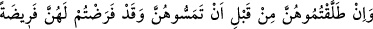
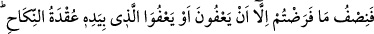

bulunmamalıdır.[190] Çünkü tesbit edilen mehirin hükmü, mehr-i misilden daha güçlüdür.
Bu sebeple belirlenmemiş olan verilecek mal, para veya eşyâ, mehr-i mislin yarısından
daha çok olmamalıdır. Zira bu malın mehr-i mislin yarısından fazla olmaması efdaldir.
“Kadr” ve “kader” iki ayrı kelimedir. “Kadr”; masdar, “kader” ise isimdir. “Add”
ve “aded”, “medd” ve “meded” gibi. “Kadr”; vüs’at ve genişlik, “kader” ise mikdar
mânâsındadır. Verilecek bu tür bir müt’ayı, mârûf ile yâni şerîatın ve mürüvvetin güzel
gördüğü tarzda vermek gerekir. Ve bunu verilecek yere uygun şekilde vermek, emirlere
uymaya koşmak sûretiyle nefislerine iyilik etmek isteyenlere vâcib bir borçtur.
İbn Temcîd demiştir ki: Boşanmış kadının dört durumu vardır. Birincisi, cinsî temasta
bulunulmamış ve mehir tesbit edilmemiş olması. İkincisi, cinsî temasta bulunulmuş ve
mehir tesbit edilmiş olması. Üçüncüsü, cinsî temasta bulunulmuş fakat mehir tesbit
edilmemiş olması. Dördüncüsü, cinsî temasta bulunulmamış fakat mehir tesbit edilmiş
olması. “Cünah”ın kaldırılması, mehrin günahının kaldırılması mânâsındadır. Bu ise
bahsettiğimiz dört durumdan ancak birincisinde geçerli olup diğer üçünde geçerli
değildir. Çünkü birinci durumda mehir kısmen vâcib olmadığı halde diğer üç durumda
mehir vâcibtir. Birinci durumda mehrin kısmen vâcib olmayışı, mehr-i mislin ikiye
bölünemeyişi sebebiyledir. Tamamının vâcib olmayışı ise kadın ile cima edilmiş
olmamasındandır. Yalnız bu durumdaki kadınlar, “onları faydalandırın” emri
muktezasınca, hak sahibidirler. Bunlar, kendileri için mehir tesbit olunmamış ve cinsî
temas olmadan boşanmış kadınlardır. Eğer mehir tesbit edilmiş olsaydı, onlar bir
şekilde yararlandırma değil, tesbit olunan mehrin tamamını hakederlerdi.
237. Kendilerine mehir tayin ederek evlendiğiniz kadınları, temâs etmeden
boşarsanız, tayin ettiğiniz mehrin yarısı onların hakkıdır. Ancak kadınların
vazgeçmesi veya nikâh bağı elinde bulunanın (velinin) vazgeçmesi hali müstesna,
affetmeniz (mehirden vazgeçmeniz), takvâya daha uygundur. Aranızda iyilik ve
ihsânı unutmayın. Şüphesiz Allah yapmakta olduklarınızı hakkıyla görür.
Nikâh ânında mehir tesbit ettiğiniz hanımlarınızı temastan önce boşarsanız, tesbit
ettiğiniz mehrin yarısını onlara vermeniz gerekir. Evli olan karı-kocadan biri, henüz
dühûl olmadan ölse, tesbit olunan mehrin tamamının verilmesi lâzımdır. Çünkü ölüm,
tesbit olunan mehrin takrîrinde dühûl gibidir. Akid sırasında mehir tesbit olunmamış ise